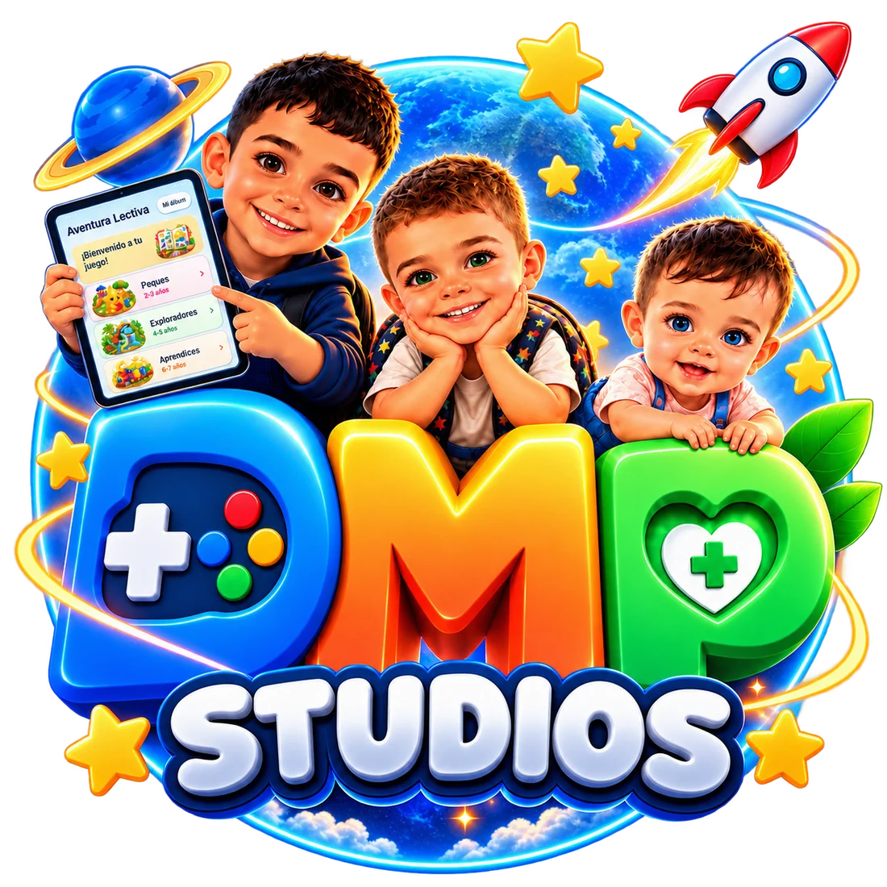
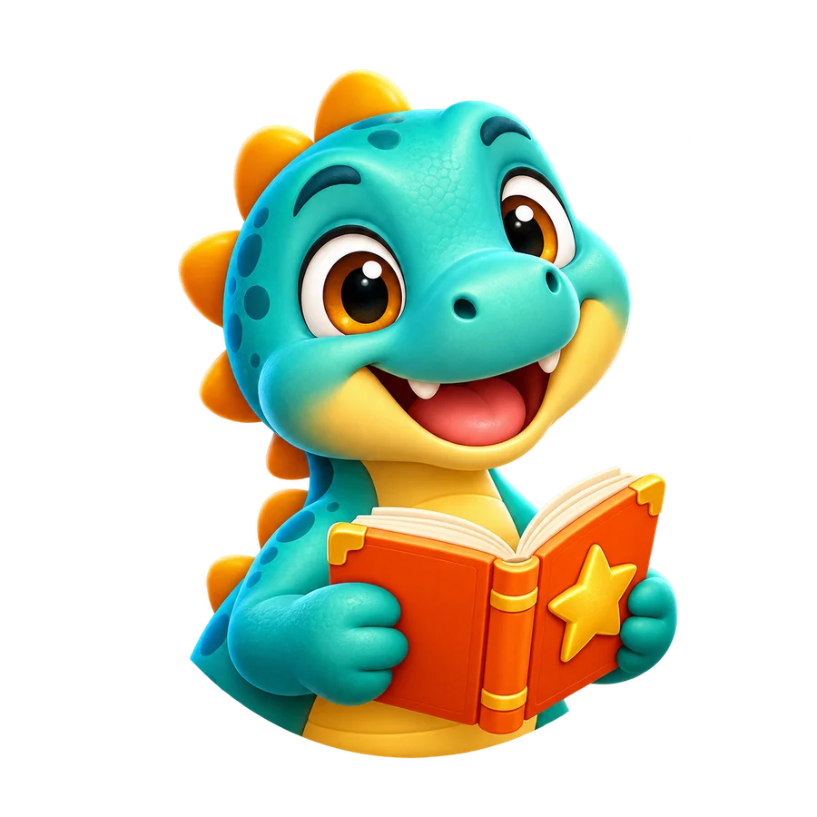
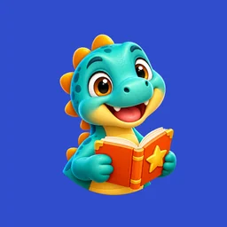

LECTURA · FE · INSPIRACIÓN
Mi Biblia
Católica
Un espacio para la Palabra, a tu ritmo. Lee, escucha, reza y transforma los versículos que te acompañan en imágenes para compartir.
Descubre la aplicación Privacidad de la app →

UN ESTUDIO. MUCHAS FORMAS DE ACOMPAÑAR.
Un rato para aprender. Un momento para tu fe.
Una ayuda en tu día a día. Creamos tecnología
que encuentra su lugar en tu vida.
Diseñadas con intención.
Hechas para personas.

NUESTRAS APLICACIONES
Universos diferentes, el mismo cuidado por los detalles. Descubre qué hace cada aplicación, cómo utilizarla y cómo trata tus datos.
LECTURA · FE · INSPIRACIÓN
Un espacio para la Palabra, a tu ritmo. Lee, escucha, reza y transforma los versículos que te acompañan en imágenes para compartir.
Descubre la aplicación Privacidad de la app →

Lanzamiento en preparaciónAPRENDIZAJE · JUEGO · CREATIVIDAD
De sus primeras palabras a sus grandes preguntas. Cinco mundos por edades y un taller creativo para descubrir, aprender y divertirse en familia.
Entra en la aventura Conoce los controles familiares →EN DESARROLLO · SALUD Y BIENESTAR
Conteo de hidratos de carbono, raciones e historial local para organizar tus comidas. Una herramienta informativa de apoyo al día a día.
EL ESTUDIO
DMP Studios es un estudio independiente de desarrollo Android. Nos mueve crear experiencias útiles, cercanas y fáciles de disfrutar.
Contacta con el estudioTexto legible, navegación clara y detalles que hacen más agradable cada momento de uso.
Opciones para adaptar el juego, controlar el micrófono y decidir sobre las estadísticas de uso.
Información específica para cada app: datos locales, permisos y servicios de terceros.
Revisamos contenido, diseño y funcionamiento para seguir mejorando lo que ya utilizas.
LO MÁS RECIENTE
Novedades de nuestras aplicaciones: Mi Biblia Católica 1.4.4 está en revisión en Google Play y Aventura Lectiva continúa preparando su lanzamiento.
12 nuevas imágenes, 51 fondos en total y creación con o sin texto. Acceso directo a la compra única sin anuncios, restauración mejorada y una nueva bienvenida. Versión enviada a revisión en Google Play.
Ver las mejorasComprensión lectora, lengua e inglés ampliados, 16 dibujos y una zona de familias con estadísticas opcionales. Sin banners ni anuncios dentro de una actividad.
Explorar las novedadesCENTRO DE PRIVACIDAD
Cada aplicación tiene su propia información de privacidad. Aquí puedes consultar los datos que utiliza y las opciones que tienes para gestionarlos.
ESTAMOS AL OTRO LADO
Una duda, una incidencia o una idea para mejorar. Escríbenos indicando la app, la versión y el modelo de tu dispositivo.
dmpstudiodev@gmail.com No incluyas contraseñas, datos de pago ni información médica en tu mensaje.Mi Biblia Católica 1.4.4 ya se ha enviado al canal de producción y está en revisión en Google Play. Añadiremos aquí su enlace de descarga cuando la ficha esté disponible. Aventura Lectiva continúa preparando su lanzamiento. Puedes consultar sus funciones, manuales y privacidad desde esta web.
Mi Biblia Católica y Aventura Lectiva funcionan sin una cuenta propia. El perfil opcional y el progreso se conservan en el dispositivo. Las compras y las actualizaciones utilizan Google Play.
Ambas apps incluyen una compra única opcional para quitar la publicidad. El precio se muestra en Google Play antes de confirmar. Puedes restaurarla con la misma cuenta de compra.
Consulta la política de tu aplicación para conocer sus opciones. Borrar los datos de la app en Android elimina el progreso local. Las estadísticas o datos recibidos por terceros tienen un tratamiento separado.
Ir al centro de privacidad →